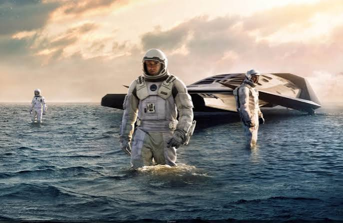
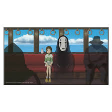
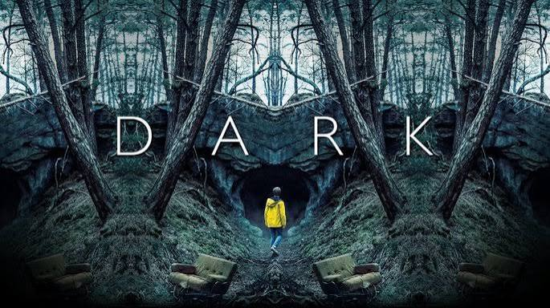

Interstellar
Película | 2014 | Ciencia ficción
Un grupo de exploradores busca un nuevo hogar para la humanidad más allá de las estrellas.
- Estado: pendiente
- Duración: 169 minutos
Explorá títulos, guardá lo que querés ver y registrá tus películas favoritas en un solo lugar.
Esta primera versión presenta el catálogo y deja preparada la estructura para calificar y comentar tus contenidos.
Una selección inicial para descubrir nuevas historias.

Película | 2014 | Ciencia ficción
Un grupo de exploradores busca un nuevo hogar para la humanidad más allá de las estrellas.

Película | 2001 | Animación y fantasía
Chihiro entra en un mundo de espíritus y debe encontrar el valor para recuperar a sus padres.

Serie | 2017 | Misterio y ciencia ficción
Cuatro familias buscan respuestas cuando la desaparición de un niño revela un misterio temporal.
| Título | Tipo | Año | Género | Estado |
|---|---|---|---|---|
| Interstellar | Película | 2014 | Ciencia ficción | Pendiente |
| El viaje de Chihiro | Película | 2001 | Fantasía | Vista |
| Dark | Serie | 2017 | Misterio | Pendiente |